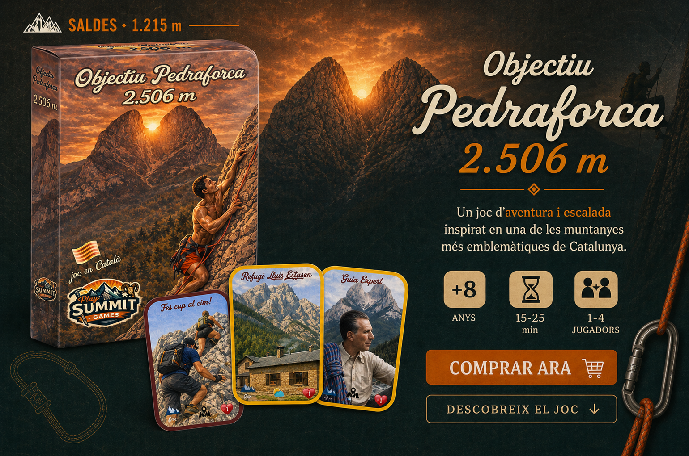
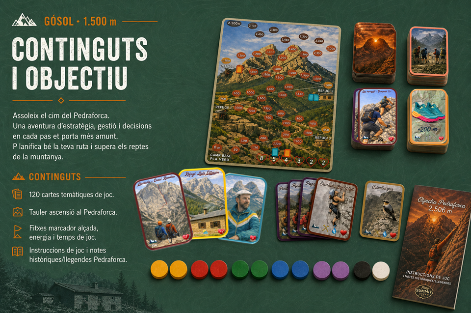
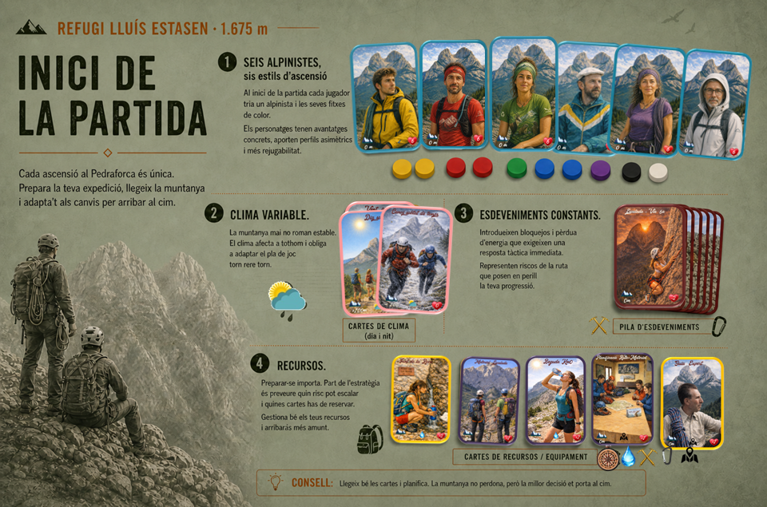
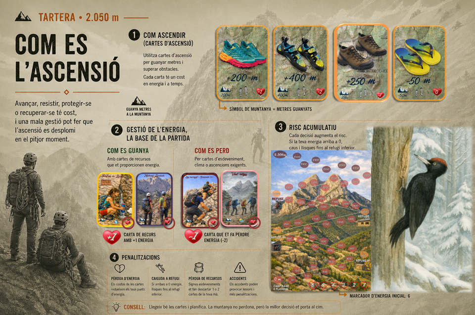
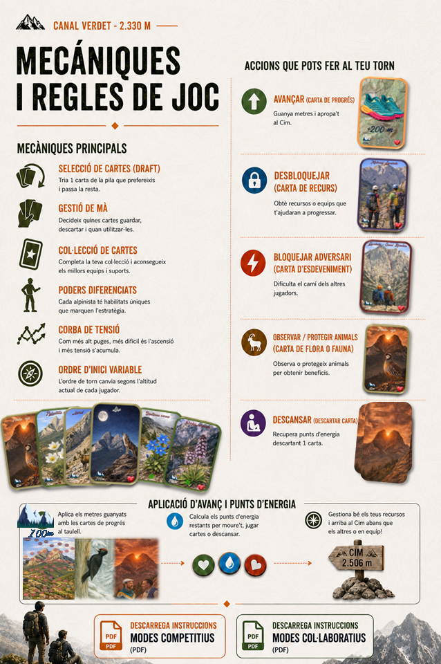
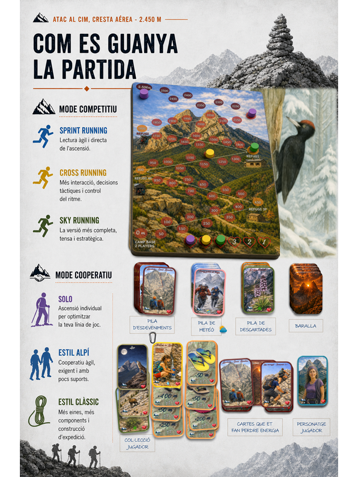
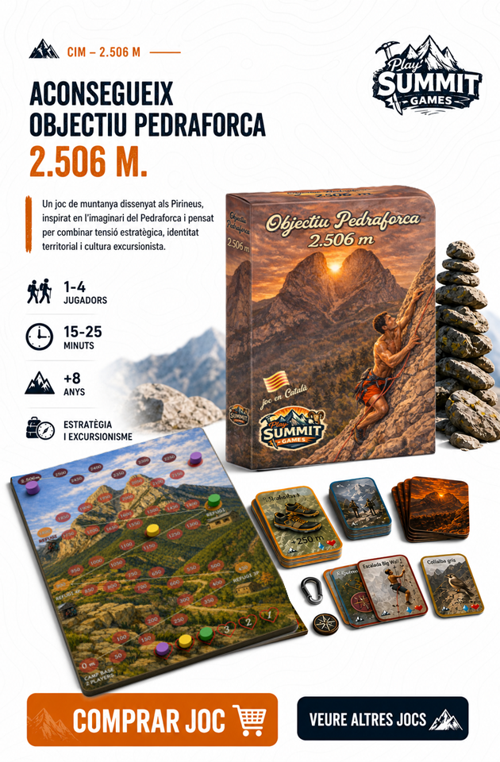

Perfils asimètrics
Cada alpinista aporta una identitat jugable pròpia: no tots avancen igual, ni resistexen igual, ni gestionen el risc de la mateixa manera.







Saldes · 1.215 m
Una ascensió lúdica inspirada en la muntanya més emblemàtica de Catalunya.
Objectiu Pedraforca trasllada al joc la tensió d'una ascensió real: progressió en altitut, gestió d'energia, clima cambiant, risc, protecció i decisions tàctiques constants.
És un joc de cartes amb forta identitat territorial, pensat per a convertir l'experiencia de montanya en una partida intensa, rejugable i profundament lligada al imaginari excursionista català.
Gósol · 1.500 m
El joc inclou 6 cartes d'alpinistes especifics amb propietats asimètriques. Cada personatje canvia la manera d'afrontar la partida i t'empeny a prendere una estratègia diferent.
Cada alpinista aporta una identitat jugable pròpia: no tots avancen igual, ni resistexen igual, ni gestionen el risc de la mateixa manera.
Alguns destaquen en eficiència energètica, altres amb capacitat de reacció, altres amb protecció, recuperació o adaptació a la muntanya o clima.
Canviar de personatje canvia el ritme i les decisions de la partida. La muntanya és la mateixa, però cada expedició es viu de manera diferent.
Aquesta asimetria fa que el joc no es redueixi a una carrera lineal: obliga a llegir millor la teva mà de cartes, la posició i el moment exacte d'assumir o evitar riscs.
Refugi Lluís Estasen · 1.675 m
La muntanya mai es manté estable. El clima afecta a tots els jugadors i els esdeveniments introdueixen bloquejos, dificultats o penalitzacions que exigeixen una resposta tàctica inmediata.
Modifiquen les condicions generals d'ascensió i obligen a adaptar el plà de joc al principi de cada torn.
Representen incidèncias, passos preillosos/imprevistos, problemes en la ruta o situacions de muntanya que frenen, bloquegen o posen en perill la teva progressió.
Pots contrarrestar amenaces amb cartes d'equipació d'ús tàctic o recursos permanents, que són capaces de protegir-te indefinidament.
No sempre convé gastar recursos al primer problema. Part de l'estratègia està en preveure quin risc pot sobrevindre i quines cartes cal reservar.
El joc recompensa la capacitat d'interpretar el moment: quan avaçar, quan equipar-se i quan esperar per a no quedar exposat més amunt.
Tartera · 2.050 m
La gestió de les pòpies forces és un dels núclis del joc. Avançar, resistir, equipar-se o recuperar-se te un cost, i una mala gestió pot fer que l'ascensió fracasi en el pitjor moment.
Les pròpies forces es véuen afectades per l'esforç d'una progressió més ràpida, sota un determinat clima, esdeveniments, cartes jugades i per decisions tàctiques que impliquen major o menor desgast.
Forçar massa el pas et pot donar una avantatge temporal, però augmentes la probabilitat d'agotar-te quan més car resulta recuperar-se.
Caus al refugi anterior per recuperar 4 punts d'energia. Sigueixes la partida, però la teva situació empitjora al perdre també una carta de mà (ara jugues amb 5).
Tornes a caure al refugi per recuperar 4 més, i perds una segona carta de recursos de mà (ara jugues amb 4 cartes). Es reflecteix un deteriorament físic més important, perdua de control i capacitat de resposta. Estas en risc. La gestió de l'energia passa a ser decisiva per a seguir viu en la partida.
Es definitiu! Produeix un accident greu i aquest alpinista no pot continuar la progressió.
Canal Verdet · 2.330 m
Aquí s'ordena el cor del sistema: es fixa la seqüencia del torn, es descobreix el clima i l'event, gestió de mà, progressió en altitut, ressolució d'efectes i reposició d'una o dues cartes.
La partida combina informació visible i decisions tàctiques permanents: apareix l'entorn, es resolen amenaces i cada jugador decideix com respondre.
Gestió d'energia, gestió de mà, progressió vertical, control del risc, protecció amb recursos i adaptació a l'estat cambiant de la muntanya.
Quant més ascendeixes, més pesa cada error. El joc concentra cada cop més tensió fins al tram final.
Atac a cim · Cresta aérea · 2.450 m
Guanya qui culmina l'ascensió primer. Qui resol millor el tram final amb una millor gestió del risc i energia en el moment de l'atac final.
Els jugadors formen una expedició compartida. La victoria depén d'arribar tots al cim i resistir colectivament les envestides de la muntanya abans que acabi el temps.
La cresta final resumeix l'anima del joc: precipitar-se pot ser fatal, per`esperar massa tambó pot condemanr l'alpinista a donar massa avantatge al rival.
Cumbre · 2.506 m
Un joc de muntanya dissenat als Pirineus, inspirat en l'imaginari del Pedraforca i pensat per a combinar ctensió estratègica, identitat territorial i cultura excursionista.